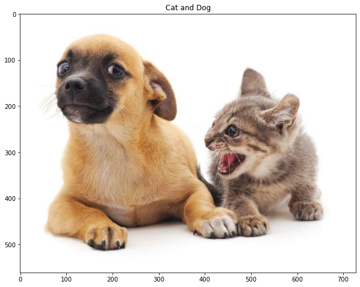
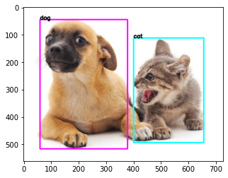

Bounding boxes
import matplotlib.pyplot as plt
import numpy as np # linear algebra
import pandas as pd # data processing, CSV file I/O (e.g. pd.read_csv)
import torch
import torchvision
%matplotlib inline
import glob
import os
from math import ceil
import random
import cv2
import PIL
from IPython.core.interactiveshell import InteractiveShell
InteractiveShell.ast_node_interactivity = "all"
from typing import *
# importing modules
import urllib.request
from urllib.request import urlopen
from PIL import Image
import bounding_boxes
cat_dog_p = "https://storage.googleapis.com/reighns/reighns_ml_projects/docs/deep_learning/computer_vision/data/misc/catdog.jpg"
# plot cat and dog with title using PIL
plt.figure(figsize=(10, 10))
cat_dog = PIL.Image.open(urlopen(cat_dog_p))
plt.imshow(cat_dog)
plt.title("Cat and Dog")
plt.show();

height, width, channel = np.asarray(cat_dog).shape
print(
f"The height is {height} and the width is {width} and the channel is {channel}"
)
The height is 561 and the width is 728 and the channel is 3
Bounding Boxes
In object detection, we usually use a bounding box to describe the spatial location of an object. The bounding box is rectangular, which is determined by the \(x\) and \(y\) coordinates of the upper-left corner of the rectangle and the such coordinates of the lower-right corner. Another commonly used bounding box representation is the \((x, y)\)-axis coordinates of the bounding box center, and the width and height of the box.
[Here we define functions to convert between] these (two
representations):
box_corner_to_center converts from the two-corner
representation to the center-width-height presentation,
and box_center_to_corner vice versa.
The input argument boxes should be a two-dimensional tensor of
shape (\(n\), 4), where \(n\) is the number of bounding boxes.
- Different conversions
- https://albumentations.ai/docs/getting_started/bounding_boxes_augmentation/
- https://github.com/awsaf49/bbox/blob/main/bbox/utils.py
Pascal
https://albumentations.ai/docs/getting_started/bounding_boxes_augmentation/
pascal_voc is a format used by the Pascal VOC dataset.
Coordinates of a bounding box are encoded with four values in pixels: [x_min, y_min, x_max, y_max]. x_min and y_min are coordinates of the top-left corner of the bounding box. x_max and y_max are coordinates of bottom-right corner of the bounding box.
Coordinates of the example bounding box in this format are [98, 345, 420, 462].
COCO
coco is a format used by the Common Objects in Context \(COCO\) dataset.
In coco, a bounding box is defined by four values in pixels [x_min, y_min, width, height]. They are coordinates of the top-left corner along with the width and height of the bounding box.
Coordinates of the example bounding box in this format are [98, 345, 322, 117].
YOLO
In yolo, a bounding box is represented by four values [x_center, y_center, width, height]. x_center and y_center are the normalized coordinates of the center of the bounding box. To make coordinates normalized, we take pixel values of x and y, which marks the center of the bounding box on the x- and y-axis. Then we divide the value of x by the width of the image and value of y by the height of the image. width and height represent the width and the height of the bounding box. They are normalized as well.
Coordinates of the example bounding box in this format are [((420 + 98) / 2) / 640, ((462 + 345) / 2) / 480, 322 / 640, 117 / 480] which are [0.4046875, 0.840625, 0.503125, 0.24375].
def voc2coco(
bboxes: Union[np.ndarray, torch.Tensor], return_tensor: bool = False
) -> np.ndarray:
"""Convert pascal_voc to coco format.
voc => [xmin, ymin, xmax, ymax]
coco => [xmin, ymin, w, h]
Args:
bboxes (torch.Tensor): Shape of (N, 4) where N is the number of samples and 4 is the coordinates [xmin, ymin, xmax, ymax].
Returns:
coco_bboxes (torch.Tensor): Shape of (N, 4) where N is the number of samples and 4 is the coordinates [xmin, ymin, w, h].
"""
# don't perform in place to avoid mutation
if isinstance(bboxes, torch.Tensor):
bboxes = bboxes.cpu().detach().numpy()
coco_bboxes = bboxes.copy()
for index, each_bbox in enumerate(bboxes):
xmin, ymin, xmax, ymax = each_bbox
w, h = xmax - xmin, ymax - ymin
if return_tensor:
coco_bboxes[index] = torch.tensor([xmin, ymin, w, h])
else:
coco_bboxes[index] = np.asarray([xmin, ymin, w, h])
return coco_bboxes
def coco2voc(
bboxes: Union[np.ndarray, torch.Tensor], return_tensor: bool = False
) -> np.ndarray:
"""Convert coco to pascal_voc format.
coco => [xmin, ymin, w, h]
voc => [xmin, ymin, xmax, ymax]
Args:
bboxes (torch.Tensor): Shape of (N, 4) where N is the number of samples and 4 is the coordinates [xmin, ymin, w, h].
Returns:
voc_bboxes (torch.Tensor): Shape of (N, 4) where N is the number of samples and 4 is the coordinates [xmin, ymin, xmax, ymax].
"""
# don't perform in place to avoid mutation
if isinstance(bboxes, torch.Tensor):
bboxes = bboxes.cpu().detach().numpy()
voc_bboxes = bboxes.copy()
for index, each_bbox in enumerate(bboxes):
xmin, ymin, w, h = each_bbox
xmax, ymax = xmin + w, ymin + h
if return_tensor:
voc_bboxes[index] = torch.tensor([xmin, ymin, xmax, ymax])
else:
voc_bboxes[index] = np.asarray([xmin, ymin, xmax, ymax])
return voc_bboxes
from numba import jit
import cv2
import numpy as np
import random
__all__ = ['coco2yolo', 'yolo2coco', 'voc2coco', 'coco2voc', 'yolo2voc', 'voc2yolo',
'bbox_iou', 'draw_bboxes', 'load_image']
def voc2yolo(bboxes, height=720, width=1280):
"""
voc => [x1, y1, x2, y1]
yolo => [xmid, ymid, w, h] (normalized)
"""
if isinstance(bboxes, torch.Tensor):
bboxes = bboxes.cpu().detach().numpy()
bboxes = bboxes.copy().astype(float) # otherwise all value will be 0 as voc_pascal dtype is np.int
bboxes[..., 0::2] /= width
bboxes[..., 1::2] /= height
bboxes[..., 2] -= bboxes[..., 0]
bboxes[..., 3] -= bboxes[..., 1]
bboxes[..., 0] += bboxes[..., 2]/2
bboxes[..., 1] += bboxes[..., 3]/2
return bboxes
def yolo2voc(bboxes, height=720, width=1280):
"""
yolo => [xmid, ymid, w, h] (normalized)
voc => [x1, y1, x2, y1]
"""
if isinstance(bboxes, torch.Tensor):
bboxes = bboxes.cpu().detach().numpy()
bboxes = bboxes.copy().astype(float) # otherwise all value will be 0 as voc_pascal dtype is np.int
bboxes[..., 0::2] *= width
bboxes[..., 1::2] *= height
bboxes[..., 0:2] -= bboxes[..., 2:4]/2
bboxes[..., 2:4] += bboxes[..., 0:2]
return bboxes
def coco2yolo(bboxes, height=720, width=1280):
"""
https://github.com/awsaf49/bbox/blob/main/bbox/utils.py
coco => [xmin, ymin, w, h]
yolo => [xmid, ymid, w, h] (normalized)
"""
# bboxes = bboxes.copy().astype(float) # otherwise all value will be 0 as voc_pascal dtype is np.int
# normolizinig
bboxes[..., 0::2] /= width
bboxes[..., 1::2] /= height
# converstion (xmin, ymin) => (xmid, ymid)
bboxes[..., 0:2] += bboxes[..., 2:4]/2
return bboxes
def yolo2coco(bboxes, height=720, width=1280):
"""
https://github.com/awsaf49/bbox/blob/main/bbox/utils.py
yolo => [xmid, ymid, w, h] (normalized)
coco => [xmin, ymin, w, h]
"""
# bboxes = bboxes.copy().astype(float) # otherwise all value will be 0 as voc_pascal dtype is np.int
# denormalizing
bboxes[..., 0::2] *= width
bboxes[..., 1::2] *= height
# converstion (xmid, ymid) => (xmin, ymin)
bboxes[..., 0:2] -= bboxes[..., 2:4]/2
return bboxes
dog_bbox, cat_bbox = [60.0, 45.0, 378.0, 516.0], [400.0, 112.0, 655.0, 493.0]
bboxes = torch.tensor((dog_bbox, cat_bbox))
bboxes
tensor([[ 60., 45., 378., 516.],
[400., 112., 655., 493.]])
VOC-COCO Test
np.testing.assert_array_equal(bboxes, coco2voc(voc2coco(bboxes)))
np.array_equal(bboxes,coco2voc(voc2coco(bboxes)))
True
VOC-YOLO Test
coco2voc(voc2coco(bboxes))
array([[ 60., 45., 378., 516.],
[400., 112., 655., 493.]], dtype=float32)
yolo2voc(voc2yolo(bboxes, height=561, width=768), height=561, width=768)
array([[ 60., 45., 378., 516.],
[400., 112., 655., 493.]])
yolo2voc(voc2yolo(bboxes, height=561, width=768), height=561, width=768)
array([[ 60., 45., 378., 516.],
[400., 112., 655., 493.]])
a = voc2coco(bboxes)
b = coco2voc(a)
a, b
(array([[ 60., 45., 318., 471.],
[400., 112., 255., 381.]], dtype=float32),
array([[ 60., 45., 378., 516.],
[400., 112., 655., 493.]], dtype=float32))
We measure the bounding box coordinates for the cat and dog respectively. Here bbox is the abbreviation for bounding box.
The bbox below represents
dog_bbox, cat_bbox = [60.0, 45.0, 378.0, 516.0], [400.0, 112.0, 655.0, 493.0]
def draw_bboxes_on_single_image(
image: Union[torch.Tensor, np.ndarray],
bboxes: Union[torch.Tensor, np.ndarray],
labels: Union[torch.Tensor, np.ndarray, List[int]],
labels_map: Dict[int, str],
colors: Dict[int, Tuple[int, int, int]],
) -> np.ndarray:
"""Draws bounding boxes on a single image.
Args:
image (Union[torch.Tensor, np.ndarray]): The original image to draw on.
bboxes (Union[torch.Tensor, np.ndarray]): The bounding boxes of the original image. This should be in voc_pascal format of (xmin, ymin, xmax, ymax).
labels (Union[torch.Tensor, np.ndarray, List[int]]): The labels of the bounding boxes corresponding to the bounding boxes. Note they are needed to be in the same order as the bounding boxes.
colors (Dict[int, Tuple[int, int, int]]): The color mapping of the labels.
Returns:
image (np.ndarray): The image with bounding boxes drawn on it.
Shapes:
- Input:
- image: :math:`(H, W, C)` or :math:`(C, H, W)` depending on whether the channels are the first or last dimension.
- bboxes: :math:`(N, 4)` where the bounding boxes are in the format of (xmin, ymin, xmax, ymax) and N is the number of bounding boxes.
- labels: :math:`(N,)` where N is the number of bounding boxes.
- Output:
- image: :math:`(H, W, C)`
Example:
>>> import torch
>>> import numpy as np
>>> cat_dog_p = "https://storage.googleapis.com/reighns/reighns_ml_projects/docs/deep_learning/computer_vision/data/misc/catdog.jpg"
>>> cat_dog = PIL.Image.open(urlopen(cat_dog_p))
>>> dog_bbox, cat_bbox = [60.0, 45.0, 378.0, 516.0], [400.0, 112.0, 655.0, 493.0]
>>> bboxes = torch.tensor((dog_bbox, cat_bbox)) # convert to (N, 2)
>>> labels = [0, 1]
>>> labels_map = {0: "dog", 1: "cat"}
>>> colors = {0: (255, 0, 255), 1: (0, 255, 255)}
>>> bbox_img = draw_bboxes_on_single_image(cat_dog, bboxes, labels=labels, labels_map=labels_map, colors=colors)
>>> plt.imshow(bbox_img);
"""
if isinstance(image, torch.Tensor):
image = image.cpu().detach().numpy()
if isinstance(bboxes, torch.Tensor):
bboxes = bboxes.cpu().detach().numpy()
if isinstance(labels, torch.Tensor):
labels = labels.cpu().detach().numpy()
# make sure it is in np.ndarray format if read as PIL
image = np.asarray(image.copy())
labels = np.asarray(labels.copy())
# if labels is like [[0], [1], [0]] then flatten
if len(labels.shape) > 1:
labels = labels.flatten()
# line/font thickness
line_thickness = round(0.002 * (image.shape[0] + image.shape[1]) / 2) + 1
for i, (bbox, label) in enumerate(zip(bboxes, labels)):
color = colors[label]
pt1, pt2 = (bbox[0], bbox[1]), (bbox[2], bbox[3])
pt1 = int(pt1[0]), int(pt1[1])
pt2 = int(pt2[0]), int(pt2[1])
image = cv2.rectangle(
image.copy(), pt1, pt2, color, int(max(image.shape[:2]) / 200)
)
# annotate text
label2str = labels_map[label]
cv2.putText(
image,
label2str,
pt1,
cv2.FONT_HERSHEY_SIMPLEX,
line_thickness / 3,
color=[0, 0, 0],
thickness=line_thickness,
lineType=cv2.LINE_AA,
)
return image
>>> import torch
>>> import numpy as np
>>> cat_dog_p = "https://storage.googleapis.com/reighns/reighns_ml_projects/docs/deep_learning/computer_vision/data/misc/catdog.jpg"
>>> cat_dog = PIL.Image.open(urlopen(cat_dog_p))
>>> dog_bbox, cat_bbox = [60.0, 45.0, 378.0, 516.0], [400.0, 112.0, 655.0, 493.0]
>>> bboxes = torch.tensor((dog_bbox, cat_bbox))
>>> labels = [0, 1]
>>> labels_map = {0: "dog", 1: "cat"}
>>> colors = {0: (255, 0, 255), 1: (0, 255, 255)}
>>> bbox_img = draw_bboxes_on_single_image(cat_dog, bboxes, labels=labels, labels_map=labels_map, colors=colors)
>>> plt.imshow(bbox_img);

Anchor Boxes
def multibox_prior(data, sizes, ratios):
"""Generate anchor boxes with different shapes centered on each pixel."""
in_height, in_width = data.shape[-2:]
device, num_sizes, num_ratios = data.device, len(sizes), len(ratios)
boxes_per_pixel = (num_sizes + num_ratios - 1)
size_tensor = torch.tensor(sizes, device=device)
ratio_tensor = torch.tensor(ratios, device=device)
# Offsets are required to move the anchor to the center of a pixel. Since
# a pixel has height=1 and width=1, we choose to offset our centers by 0.5
offset_h, offset_w = 0.5, 0.5
steps_h = 1.0 / in_height # Scaled steps in y axis
steps_w = 1.0 / in_width # Scaled steps in x axis
# Generate all center points for the anchor boxes
center_h = (torch.arange(in_height, device=device) + offset_h) * steps_h
center_w = (torch.arange(in_width, device=device) + offset_w) * steps_w
shift_y, shift_x = torch.meshgrid(center_h, center_w)
shift_y, shift_x = shift_y.reshape(-1), shift_x.reshape(-1)
# Generate `boxes_per_pixel` number of heights and widths that are later
# used to create anchor box corner coordinates (xmin, xmax, ymin, ymax)
w = torch.cat((size_tensor * torch.sqrt(ratio_tensor[0]),
sizes[0] * torch.sqrt(ratio_tensor[1:])))\
* in_height / in_width # Handle rectangular inputs
h = torch.cat((size_tensor / torch.sqrt(ratio_tensor[0]),
sizes[0] / torch.sqrt(ratio_tensor[1:])))
# Divide by 2 to get half height and half width
anchor_manipulations = torch.stack((-w, -h, w, h)).T.repeat(
in_height * in_width, 1) / 2
# Each center point will have `boxes_per_pixel` number of anchor boxes, so
# generate a grid of all anchor box centers with `boxes_per_pixel` repeats
out_grid = torch.stack([shift_x, shift_y, shift_x, shift_y],
dim=1).repeat_interleave(boxes_per_pixel, dim=0)
output = out_grid + anchor_manipulations
return output.unsqueeze(0)